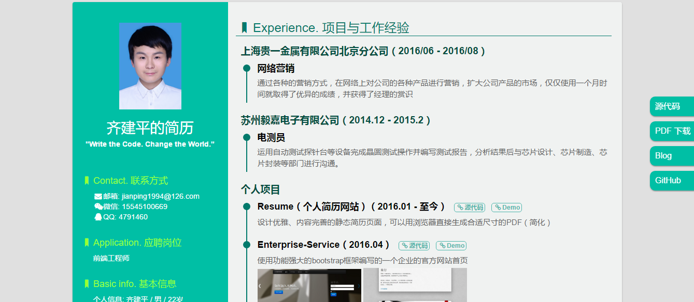
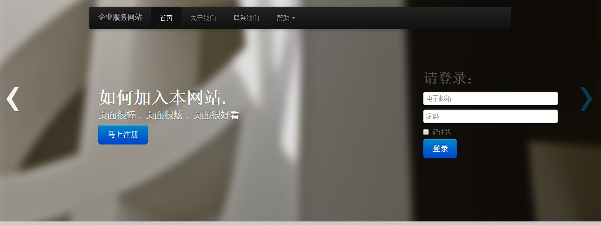

-
- Experience. 项目与工作经验
上海贵一金属有限公司北京分公司（2016/06 - 2016/08）
-
网络营销
通过各种的营销方式，在网络上对公司的各种产品进行营销，扩大公司产品的市场，仅仅使用一个月时间就取得了优异的成绩，并获得了经理的赏识
苏州毅嘉电子有限公司（2014.12 - 2015.2）
-
电测员
运用自动测试探针台等设备完成晶圆测试操作并编写测试报告，分析结果后与芯片设计、芯片制造、芯片封装等部门进行沟通。
个人项目
-
Resume（个人简历网站）（2016.01 - 至今） 源代码 Demo
设计优雅、内容完善的静态简历页面，可以用浏览器直接生成合适尺寸的PDF（简化）
 -
Enterprise-Service（2016.04） 源代码 Demo
使用功能强大的bootstrap框架编写的一个企业的官方网站首页

-
电子商务网站 源代码 Demo
一个电子商务网站的制作，使用jQuery库，模块化布局
-
网页基础功能 源代码
刚开始时，自己做的一些小的网页基础功能，包括下拉菜单(jQuery、原生JS、CSS三种方式实现)，图片轮播，弹出层效果
-
Aircraft War 源代码
一个用Java编写的简单的游戏，飞机大战，敌机不断生成，并且敌机子弹方向即时瞄准对方战机，战机子弹可根据分数而增加威力
-
- Skill. 技能清单
Web前端
-
HTML / CSS
能够编写语义化的 HTML，模块化的 CSS，完成较复杂的布局
-
JavaScript
熟悉原生Javascript，能脱离jQuery等类库编码
能运用模块化、面向对象的方式编程
熟悉jQuery库、Ajax、bootstrap等
-
其他
掌握sublime，DW,Git等的使用
了解ERP软件各项功能的使用
后端
-
语言
了解 Sql sever、Oracle数据库，能够实现简单的增删改查
了解 Java，能进行简单的网络编程和多线程编程
其他
-
是一个有趣的人，个人喜欢搞笑
严重强迫症，不能忍受界面一个像素的偏差，同样不能忍受代码格式一个空格的偏差
学习能力强，以上绝大多数的技能都是大三之后自学修得的
热衷于新科技，新技术